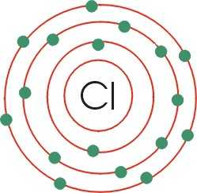

CLORO:

El cloro es un elemento químico de número atómico 17 situado en el grupo de los halógenos (grupo VII A) de la tabla periódica de los elementos. Su símbolo es Cl. En condiciones normales y en estado puro forma dicloro: un gas tóxico amarillo-verdoso formado por moléculas diatómicas (Cl2) unas 2,5 veces más pesado que el aire, de olor desagradable y tóxico. Es un elemento abundante en la naturaleza y se trata de un elemento químico esencial para muchas formas de vida.
 Ir a página principal
Ir a página principal